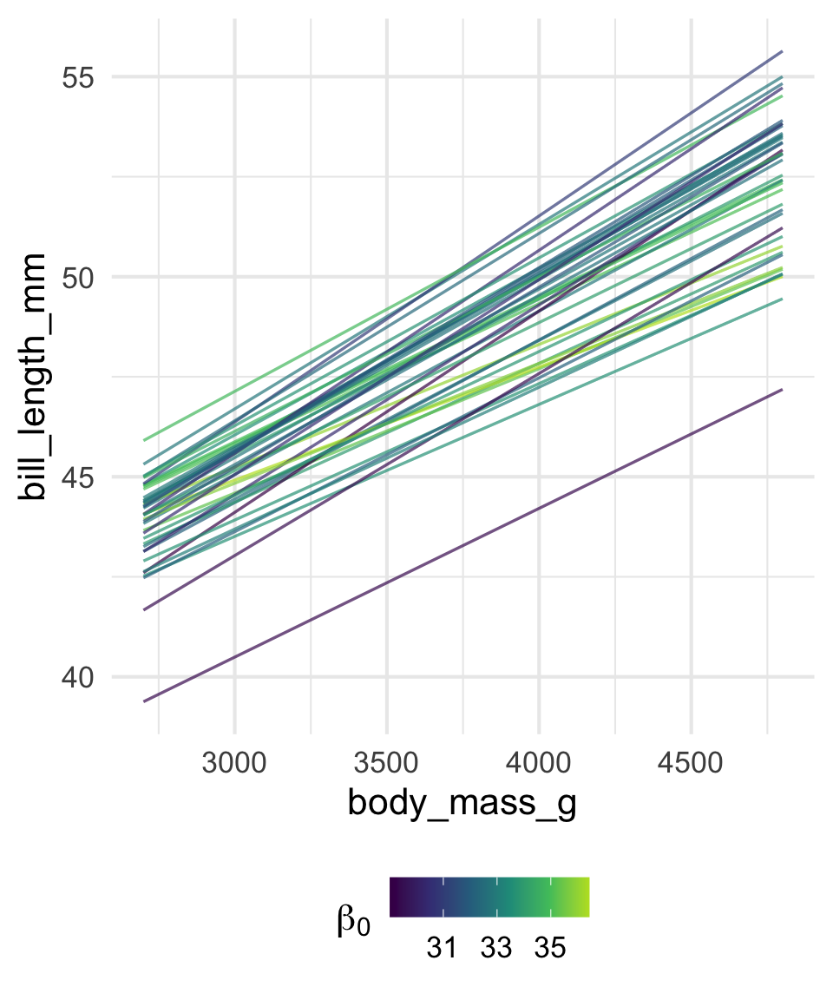
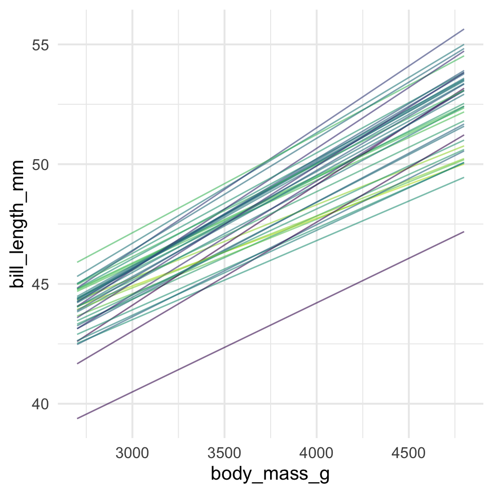
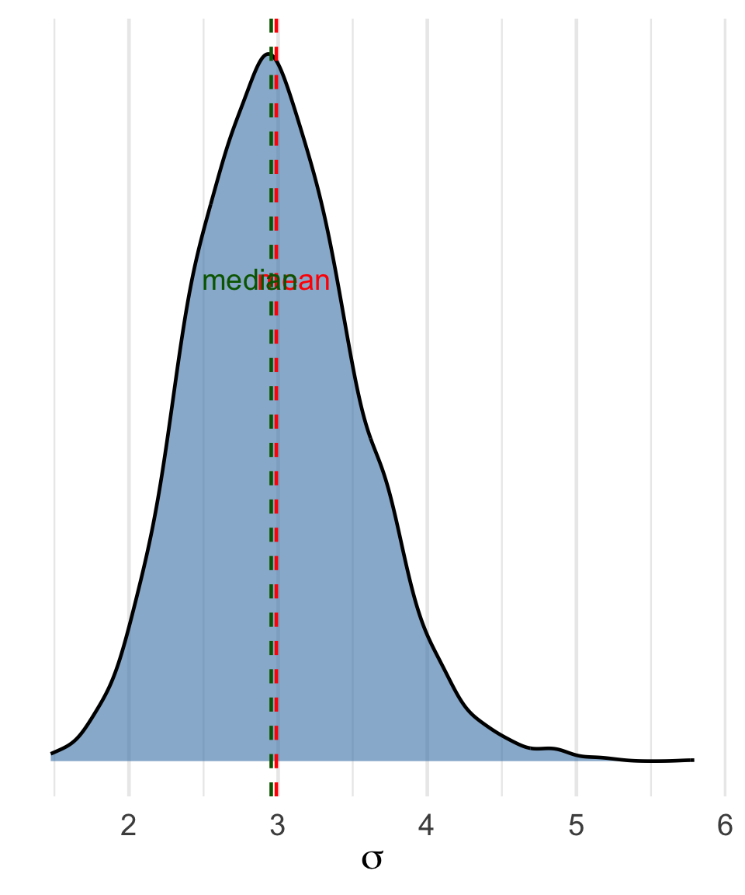

Bayesian Posteriors in Regression
PSY504, Advanced Statistics in Psychology
Princeton University
2026-04-01
Last time we focused on coins — one parameter, \(\theta\). Each posterior draw was a single number.
In regression, each draw is a full set of parameters: \(\beta_0\), \(\beta_1\), and \(\sigma\). What changes?
| Coin | Regression | |
|---|---|---|
| Model | \(Y \sim \text{Binomial}(n, \theta)\) | \(Y \sim \text{Normal}(\mu_i, \sigma)\) |
| Parameters | \(\theta\) | \(\beta_0, \beta_1, \sigma\) |
| Draws | 4,000 values of \(\theta\) | 4,000 sets of \((\beta_0, \beta_1, \sigma)\) |
More parameters, but the recipe is the same — except that grid approximation no longer scales (1,000\(^3\) = 1 billion cells), so we rely on MCMC.
With coins, each draw was one number (\(\theta\)). With regression, each draw is a complete set of parameters:
| Draw | \(\beta_0\) | \(\beta_1\) | \(\sigma\) |
|---|---|---|---|
| 1 | 32.8 | 0.0041 | 2.85 |
| 2 | 31.5 | 0.0044 | 2.97 |
| 3 | 33.1 | 0.0039 | 2.88 |
Each row is a complete regression equation: \(\hat{y}_i = \beta_0 + \beta_1 x_i\)
4,000 draws = 4,000 regression lines.
One draw from the posterior = one regression line.
Stack many of them = a fuzzy bundle, dense where the posterior is concentrated, sparse where uncertain.
Color-code by intercept (\(\beta_0\)): lower intercepts pair with steeper slopes.
All lines pass through the data cloud, so if a line starts lower it must rise more steeply.
\(\beta_0\) and \(\beta_1\) are negatively correlated in the posterior.

In the coins lab, the posterior was one-dimensional: just \(p(\theta \mid \text{data})\).
In regression, each parameter has its own marginal posterior:
“Marginal” = looking at one parameter at a time, collapsing over the others.
These are the histograms you’ll make in the lab.
The parameters don’t vary independently.
The joint posterior captures how they move together:
\[p(\beta_0, \beta_1, \sigma \mid \text{data})\]
Visualize the joint for two parameters as a scatter plot — each point is one draw.
Circle = independent. Tilted ellipse = correlated.
pairs() plotDiagonal: marginal distributions (one parameter at a time)
Off-diagonal: joint distributions (two parameters together)
You’ll see a tight ellipse between \(\beta_0\) and \(\beta_1\), tilted from upper-left to lower-right.
That tilt = the negative correlation from the spaghetti plot.
\(\beta_0 = 35\) is plausible. \(\beta_1 = 0.005\) is plausible.
But \(\beta_0 = 35\) and \(\beta_1 = 0.005\) together? The joint posterior may assign that combination very low probability.
You never see a line that starts high and rises steeply.
vcov(fit1.b, correlation = TRUE) quantifies the correlation.

\(\sigma\) must be positive, so its posterior is right-skewed.
. . .
When skewed, mean, median, and mode diverge:
. . .
robust = TRUE switches brms to median + MAD SD.

Part 1: Fit lm() and brm() on Chinstrap penguins, compare output
Part 2: Extract draws, pairs() plot, spaghetti plots, parameter summaries
Exercise: Redo it all with Gentoo penguins
PSY 504: Advanced Statistics